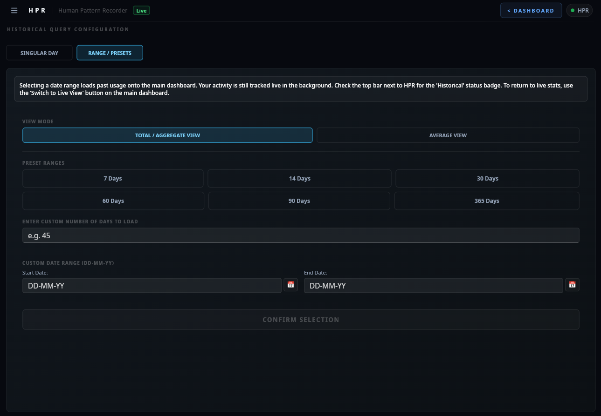
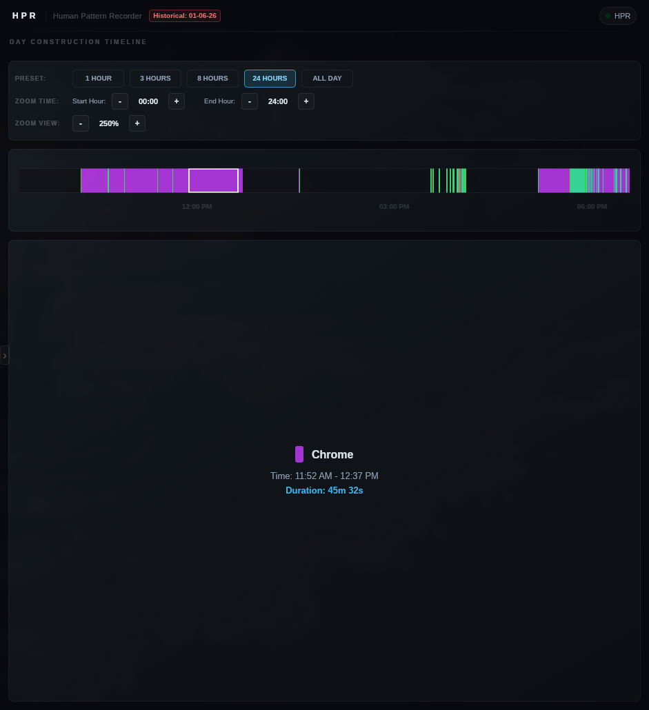
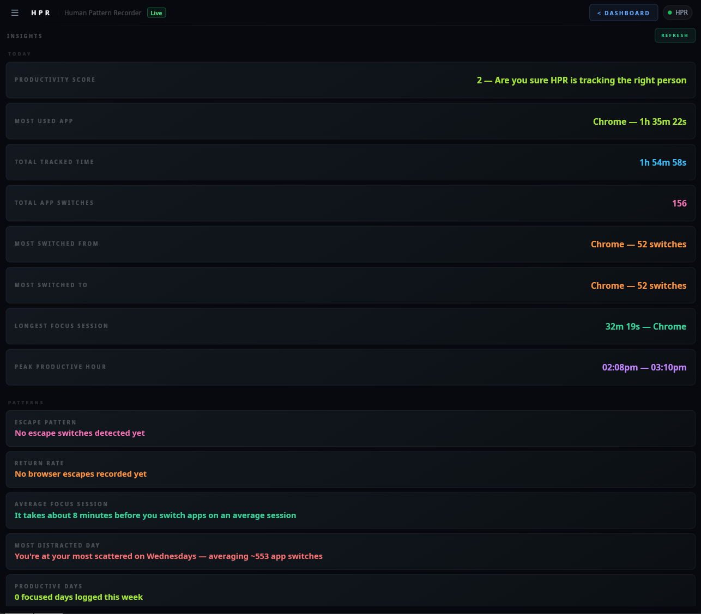
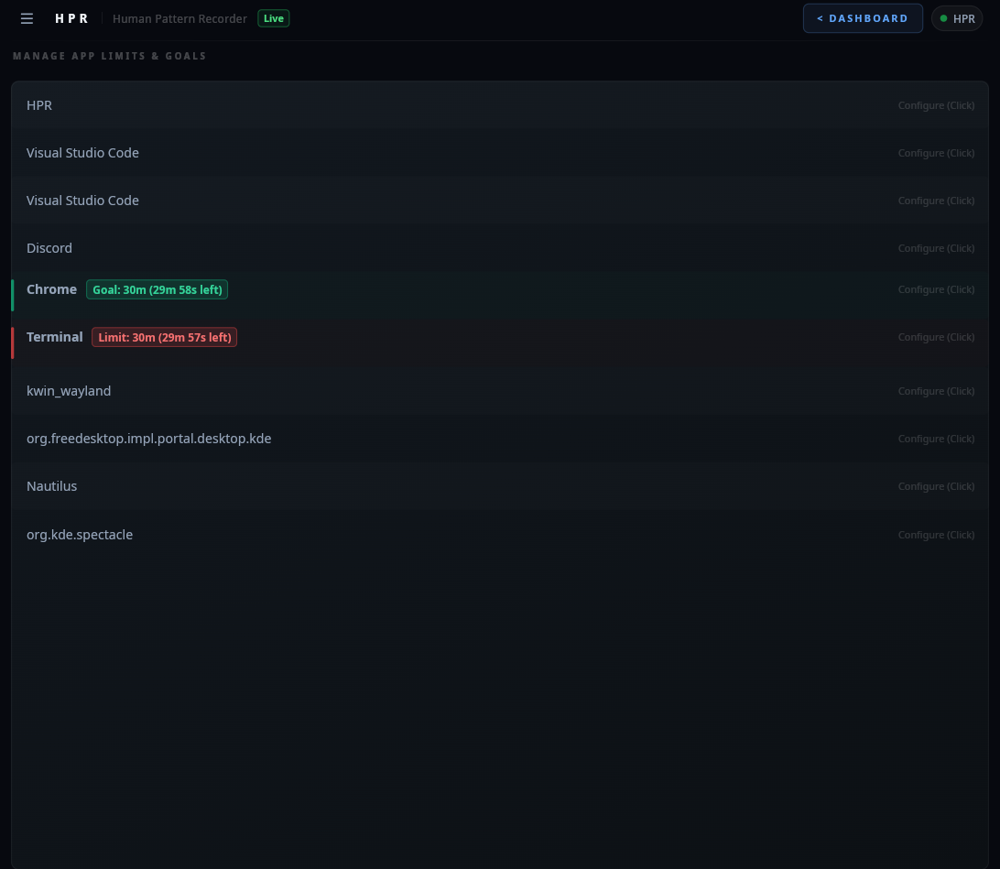
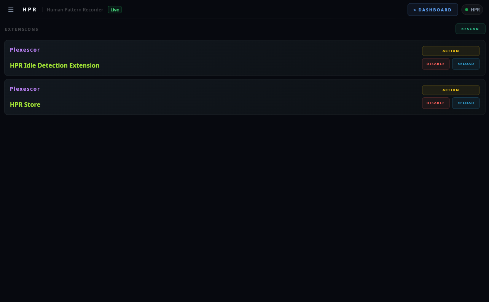

Everything HPR does.
Every feature, every detail. No premium tiers. No feature gating. Everything is free and open source.
Real-Time Window Tracking
HPR watches which window is in focus every 50 milliseconds. It builds a running log of exactly where your time went — not where you think it went.
50ms Polling
Polls the active window every 50 milliseconds. Every switch detected, every transition logged. Uses
std::chrono::steady_clock for monotonic, NTP-immune timing.
Live Time Accumulation
Total time per application updates in real time, displayed as 2h 14m 30s (25%). Percentage
breakdown gives instant visibility into time distribution.
Switch History
Every transition between applications is timestamped and logged. Full chronological history shows from → to with exact times.

Historical Data — Three Modes
Click the calendar icon in the sidebar to open the History Range view. Choose from three loading modes:
.db file asynchronously.
Historical loading runs on dedicated background threads. Live tracking is never paused, and queries run in parallel. This is incredibly fast and avoids the 30-second timeouts common in single-threaded tracking systems like ActivityWatch.

Timing Integrity
Duration measurement uses std::chrono::steady_clock (monotonic). Display timestamps use
system_clock. This separation is enforced — using system_clock for duration is a classic bug
that corrupts totals when NTP fires or DST changes mid-session.
Window Normalization
Raw window titles from the OS are inconsistent and noisy. validateAndUpdateWindow_Cross runs
a cross-platform normalization pass on every poll, filtering out system noise like
plasmashell, searchhost, and KWin JS runtime artifacts.
Browser Tab Tracking without an extension
Chrome, Edge, Firefox, Brave, Zen Browser — HPR tracks which tab is active by reading the window title the OS already exposes. No browser extension. No manifest. No permissions dialog. No marketplace install. It has always been there.
Tab View (Raw)
Shows unaliased, unprocessed tab titles exactly as the OS reports them. Differentiate between specific pages — time across two different YouTube videos, individual GitHub issues, separate docs.
Site View (Formatted)
Applies rules from tabAliases.csv to group tabs by website. All YouTube tabs collapse into
"YouTube". All GitHub pages collapse into "GitHub". Toggle between the two views inside the app with a
single click.
Tab View vs Site View
| Mode | Shows | Use when |
|---|---|---|
| Tab View | Raw title string from OS | You want granular per-page breakdown |
| Site View | Aliased name from tabAliases.csv |
You want time grouped by website |
Every supported browser puts the active tab name in its window title. HPR reads that string on every 50ms poll. The data has always been there — no browser API, no content script, no manifest.json, no user permission required.
Browser Support Matrix
| Browser | Platform Support | Status | Extension Required | Parsing Strategy / Notes |
|---|---|---|---|---|
| Google Chrome | Windows / Linux | ✅ Working | No | Matches chrome in window title/process name |
| Microsoft Edge | Windows / Linux | ✅ Working | No | Matches edge in window title/process name |
| Mozilla Firefox | Windows / Linux | ✅ Working | No | Matches firefox in window title/process name |
| Brave | Windows / Linux | ✅ Working | No | Matches brave in window title/process name |
| Zen Browser | Windows / Linux | ✅ Working | No | Matches zen in window title/process name |
Code Editor & IDE Project Tracking without extensions
HPR tracks which project you are currently working in, not just whether the editor is open. No editor extensions, plugins, or marketplace installs are required.
How it works — VS Code
VS Code puts the active project name in its window title as
filename - project - Visual Studio Code. HPR reads that title on every poll tick and parses
it:
# VS Code title format: filename - project - Visual Studio Code # HPR strips trailing suffix, then # splits on last " - " separator result = project_name
How it works — JetBrains IDEs (Beta)
JetBrains IDE window titles are tracked by HPR with a jetbrains: prefix (resolving to jetbrains: ProjectName – file [module] or jetbrains: ProjectName). HPR parses the project name using the en dash –:
# JetBrains title format: jetbrains: ProjectName – file [module] # HPR strips prefix "jetbrains: ", then # takes everything before the first en dash " – " result = project_name
Project View — Raw & Formatted
A dedicated Project View tab shows time broken down by project. Toggle between two modes inside the app:
| Mode | Shows |
|---|---|
| Raw View | Unprocessed full window title substring as received from the OS |
| Formatted View | Categorizes projects via projectAliases.csv (e.g., mapping
rust-app-v2 to Client Bob) |
Works on Every Platform
Hyprland, GNOME, KDE Plasma 6+, Cinnamon, and Windows. Every backend already has a window title getter and the supported editors put the project name in the title on all of them. No platform-specific setup.
Zero plugins. Zero marketplace installs. Zero configuration inside your IDE/editor. HPR reads the single string the OS already exposes as the window title. The project name has been there the whole time.
IDE & Code Editor Support Matrix
| Application | Platform Support | Status | Extension Required | Parsing Strategy / Notes |
|---|---|---|---|---|
| Visual Studio Code | Windows / Linux | ✅ Working | No | Matches code, vscode, or visual studio code in window title/process name |
| IntelliJ IDEA | Windows / Linux | ✅ Working | No | Matches jetbrains in window title/process name; extracts project name before the en dash (–). |
| WebStorm | Windows / Linux | ✅ Working | No | Matches jetbrains in window title/process name; extracts project name before the en dash (–). |
| PyCharm | Windows / Linux | ✅ Working | No | Matches jetbrains in window title/process name; extracts project name before the en dash (–). |
| CLion | Windows / Linux | ✅ Working | No | Matches jetbrains in window title/process name; extracts project name before the en dash (–). |
| Rider | Windows / Linux | ✅ Working | No | Matches jetbrains in window title/process name; extracts project name before the en dash (–). |
| GoLand | Windows / Linux | ✅ Working | No | Matches jetbrains in window title/process name; extracts project name before the en dash (–). |
| RustRover | Windows / Linux | ✅ Working | No | Matches jetbrains in window title/process name; extracts project name before the en dash (–). |
| PhpStorm | Windows / Linux | ✅ Working | No | Matches jetbrains in window title/process name; extracts project name before the en dash (–). |
| RubyMine | Windows / Linux | ✅ Working | No | Matches jetbrains in window title/process name; extracts project name before the en dash (–). |
| DataGrip | Windows / Linux | ✅ Working | No | Matches jetbrains in window title/process name; extracts project name before the en dash (–). |
| DataSpell | Linux | ✅ Working | No | Matches jetbrains in window title/process name; extracts project name before the en dash (–). |
Day Construction Timeline
Reconstruct your daily narrative. HPR maps your active window transitions chronologically onto an interactive, zoomable, and scrollable timeline canvas, giving you visual continuity instead of just isolated numbers.
Zoom & Scroll Presets
Focus on microscopic details or analyze the entire day. Supports interactive presets to instantly zoom into 1h, 3h, or 8h intervals, or zoom out to 24h and All Day spans. The timeline canvas scrollbar lets you slide across the day seamlessly.
Adaptive Hourly Markers
Timeline markers calculate coordinates and adjust automatically. Zoomed viewports (1h, 3h, 8h) draw markers at every 1-hour interval, while high-span viewports (24h, All Day) space markers every 3 hours (e.g., 06:00 AM, 09:00 AM) to prevent overlapping labels and maintain design aesthetics.
Continuity Gap Capping
Prevents downtime from polluting your logs. If you close HPR or turn off your computer for 5 hours, a naive timeline would stretch the last active application across the entire downtime. HPR's reconstruction algorithm identifies these focus gaps (transitions to Unknown or shutdown states) and caps the preceding app segment to a maximum of 1 minute.
Interactive Hover Tooltips
No clicks required. Simply hover your cursor over any timeline block to view its properties instantly. The status panel updates dynamically in real-time, displaying the application's aliased name, exact active duration, and precise start/end time range.
HPR Tracking
The tracking engine includes HPR itself inside the timeline, giving you visibility into the time you spend managing goals, reviewing insights, or developing extensions.

Day Construction Timeline — Zoomable & Scrollable
Timelines are calculated using high-precision fractional positions, ensuring that short 1-second switches are scaled and rendered accurately alongside hours-long focus sessions.
Pattern Analysis Engine
PatternAnalyzer runs seven analysis passes every 30 seconds for real-time daily metrics, and triggers a multi-day correlation pass to extract 9 advanced trend insights.
Real-Time Daily Metrics
Most Used Application
Direct aggregation over timeLog_PerApp. Shows your dominant application with exact time.
Total Tracked Time
Sum of all application usage for the day. Your actual screen time, not an estimate.
Total App Switches
Count of every transition between applications. A signal of how fragmented your day was.
Most Switched From / To
Top switch pairs from switchHistory. Reveals your most common context-switch patterns.
Longest Focus Session
Chronological Event-Matching Algorithm. Flattens switch history into a unified timeline of arrivals/departures, sorted in O(N log N). One pass pairs each arrival with its next departure, discarding orphan events.
Peak Productive Hour
Sliding Window Heuristic. A 60–90 minute window slides across the complete timeline, counting switches at each position. The position with fewest switches = deepest focus.
Advanced Cross-Day Patterns
Escape Pattern
Tracks switches from your primary work application directly to browsers, showing the average daily count of browser escapes.
Return Rate
Measures focus bounce-back by calculating the percentage of times you return to your work application immediately after a browser distraction.
Average Focus Session
Computes the average duration of uninterrupted work sessions before switching windows across the multi-day span.
Most Distracted Day
Pinpoints the day of the week with the highest average number of application switches, isolating weekly distraction patterns.
Productive Days
Counts the days during the current week where your hourly switch frequency remained below the productivity threshold.
Screen Time vs Average
Compares today's cumulative screen time with your N-day average to check if you are overworking or taking it easy.
Focus Dip Hour
Pinpoints the specific hour of the day where application switches spike most consistently across days, identifying energy crashes.
Deep Work Before Noon
Measures the percentage of days where your longest focus sessions start in the morning (before 12:00 PM local time).
Weekend vs Weekday
Compares average work-app usage on weekdays versus weekends to show how well you separate work from rest.

Insights — All seven analysis passes
When the user enters the Insights view, HPR asynchronously queries the SQLite database using an N-thread concurrent read approach. This avoids dashboard UI freezes while loading many days of historical records.
Both models filter out HPR itself, the Unknown state, and system noise before running. Insights reflect actual work, not measurement artifacts.
Per-App Limits & Goals
Set a daily time limit or a daily usage goal on any tracked application — directly from the built-in Goals view. HPR monitors usage in the background and fires a system notification the moment you cross a threshold.
Limits
Cap an app to a maximum number of minutes per day. When usage crosses that threshold HPR sends a system notification — and can optionally force-quit the application automatically. The badge on each row shows exactly how many minutes remain, updated live.
Goals
Set a minimum number of minutes you want to spend in an app each day — for example, 30 minutes in your code editor. HPR tracks your progress and notifies you when you hit the goal.
How to configure
Open the Goals view
Click the Goals icon in the sidebar. Every tracked application appears in the list automatically.
Click any app row
The row expands inline, revealing a minute input with +/− step buttons and three actions: SET LIMIT, SET GOAL, or RESET.
HPR handles the rest
A dedicated background thread monitors usage continuously. Limits show a red accent badge; goals show green. Both display remaining time live.

Limits and goals take effect immediately. No restart. No config file editing. Changes are reflected in the UI the moment you set them.
Advanced users can intercept the limit-reached event via the Lua Extension Override API to run custom logic — log it, send it to a webhook, trigger a different notification, or suppress it entirely.
Alias System
Raw window titles are inconsistent. Visual Studio Code on one machine, code on
another, code.exe on Windows. Aliases collapse all of them into one label.
Application Aliases
aliases.csv — maps raw window names to display names. code catches
vscode, code-oss, code.exe. terminal catches
kitty, alacritty, konsole, wezterm.
Tab Aliases
tabAliases.csv — collapses specific URLs and page titles into website names. All YouTube
tabs become "YouTube". All GitHub pages become "GitHub".
Project Aliases
projectAliases.csv — categorizes your VS Code projects (e.g., mapping
rust-app-v2 to Client Bob). The default template is located in
~/.config/HPR/.
Hot Reload
Save the alias file, HPR picks it up within the next UI tick. No restart required. Cached via
unordered_map — O(1) lookups after first resolution.
# raw substring,Display Name code,Visual Studio Code kitty,Terminal alacritty,Terminal konsole,Terminal wezterm,Terminal firefox,Firefox chromium,Chrome
The database stores raw OS strings exactly as received. Aliases are resolved at display time only. Renaming an alias retroactively updates every historical entry for that application with zero migration work.
# One line per alias raw substring,Display Name # Lines starting with # are comments # Matching is substring-based # First match wins
Plain SQLite. One file per day.
Your data is a folder on your disk. Removing it means deleting that folder. No server. No account. No support ticket.
~/.local/share/HPR/HPR_DB/ (Linux) %APPDATA%\HPR\HPR_DB\ (Windows) 05-26/ 01-05-26.db 02-05-26.db ... A normal day: 30 to 100 KB A full year: under 50 MB
Write Strategy
app_usage — INSERT OR REPLACE on unique app
name. One row per app, always current.
switch_history — INSERT OR IGNORE on unique
timestamp. Dumps full history every flush, SQLite drops duplicates.
WAL mode with passive checkpoint after every write. Added after real WAL corruption on Btrfs + LUKS during development.
Single-Instance Lock
Windows: CreateFileA with FILE_FLAG_DELETE_ON_CLOSE.
Auto-deletes on crash.
Linux: flock(LOCK_EX | LOCK_NB). Kernel releases
on process death.
At exactly midnight, HPR automatically commits a final WAL checkpoint, clears all tracked data from
RAM, and creates a fresh DD-MM-YY.db for the new day — with no restart required. You never
lose data between days and never need to think about it.
Interpreted UI Mode
This is not a theme engine. This is not CSS variables. HPR loads the entire UI definition from disk at runtime using Slint's interpreter. You have full access to the Slint language — layouts, animations, components, property bindings.
The navigation sidebar collapses to a thin 14px sliver at the screen edge — hover to reveal icon buttons for every view. One of those buttons is Reload UI: hit it while in interpreted mode and your modified .slint file is re-parsed and the interface re-renders in under a second, without restarting HPR.
Compiled vs. Interpreted
| Aspect | Compiled | Interpreted |
|---|---|---|
| Class | HPR |
HPRInterpreter |
| Mechanism | Slint generates C++ at build time | Slint loads .slint from config dir at runtime |
| Performance | Maximum | Negligible difference |
| Customizable | No | Full UI control |
Structs, properties, and callbacks are referenced by name from C++. Note that satisfying this contract is optional; if you omit any properties or callbacks, the application will still load and run, but you will not receive data or trigger those callbacks. Renaming them breaks the connection silently for those specific fields. Read READ_ME_BEFORE_MODIFYING_UI.txt before editing.
What you can change
// Enable runtime UI loading use-interpreter,true // Your UI files ~/.config/HPR/ui/app-window.slint // Reference copy for diffing ~/.config/HPR/ui-REFERENCEONLY/
Sandboxed Lua Extension Engine
Build dynamic custom behaviors, widgets, integrations, and automation directly using a highly secure,
concurrency-safe Lua 5.4 scripting sandbox. No binary compilation required. Zero chance of destabilizing the core.
The extension API is intentionally beginner-friendly — write a simple Lua function, drop the file into ~/.config/HPR/extensions/, and HPR picks it up instantly. No setup wizards, no package managers, no build steps. If you've ever written a script, you can build an extension.
The Extension Architecture
HPR embeds a sandboxed sol2-bound Lua VM inside its extension manager. Scripts run with safe limits, isolated variables, and restricted OS API wrappers, allowing robust third-party expansion without compromising core tracking thread execution.
Interactive UI Callbacks
Register UI callbacks using registerUiCallback_E. Slint callback arguments (Strings, Doubles, Booleans, Arrays, and Structs) are recursively mapped and forwarded directly to Lua VM event listeners as parameters (with a void return in C++).
C++ RAII Auto-Disconnection
Forget manual cleanup. All EventHub event subscriptions are bound to C++ connection tracking handles. When an extension is unloaded or reloaded, subscriptions are cleanly disconnected automatically.
Embedded SQLite Access
Execute fast, safe database queries directly from your extension. Interrogate tracking history, fetch active categories, and calculate stats inside your scripts.
EventHub Messaging
Subscribe to application events, lock states, time changes, and idle periods in real-time. Publish custom signals to drive modular widgets.
HTTP Networking
Make HTTP GET/POST requests directly from Lua to integrate with REST APIs, webhooks, and external services — all while the core remains offline by default.
Function Overriding API
For advanced users: intercept and override 28 core C++ engine functions directly from Lua. Rename windows before they're stored, mock database queries, block notifications, spoof timestamps, hijack HTTP requests, control tracking state, and more. Full override docs →
Native Shared Libraries (.dll/.so)
Supercharge extensions by loading external dynamic libraries. Execute raw machine code, call low-level OS APIs, create custom system tray icons, or run heavy multithreaded jobs. Securely controlled via a settings toggle.
Recursive Subdirectory Scan
RESCAN walks the extensions folder recursively. Organize your scripts into subdirectories freely — HPR finds them all. Use HPR.getExtensionDir_E() to get the relative path to your extension's own subfolder for safe file I/O.
Per-Extension Isolation
Each loaded extension runs in its own dedicated background thread. If one extension crashes or throws, all others keep running and the core C++ tracker is completely unaffected.

The numbers.
Cachegrind, Callgrind, and real-world measurements. HPR's own code doesn't appear in the hot path.
Linux Memory Explained
BTOP/htop report ~47 MB. The actual private memory (heap + stack + data) is ~26 MB. The remaining ~25 MB is shared GPU library pages from Mesa/LLVM loaded by Slint's OpenGL renderer. These pages are shared with every GPU-accelerated process on your system.
# Verify yourself: cat /proc/$(pgrep HPR)/status | \ grep -E "RssAnon|RssFile|VmRSS"
Disable GPU Overhead
Set hardware-acceleration,false in config.csv. Mesa never loads. libLLVM never loads. RSS
drops to ~26 MB. UI is visually identical — CPU renderer only costs slightly more during redraws at
500ms intervals.
Cachegrind (15s sample)
L1 instruction miss rate: 0.20% Last-level instruction miss: 0.01% L1 data miss rate: 2.6% Last-level data miss rate: 0.2% Overall last-level miss rate: ~0.0% 2.6% L1 data miss is entirely Slint's font rendering pipeline.
Callgrind (60s sample)
4.46 billion instructions over 60 seconds. HPR's own C++ backend did not appear in the top 15 hottest functions. Everything was Slint, FreeType, fontconfig, or parley doing text work.
Zero network by default. Zero accounts.
Your data is a folder on your disk. Deleting it means deleting that folder. No server to request deletion from.
No Accounts
No signup. No login. No email. No password. Launch the binary and it works.
No Telemetry (Opt-in)
No analytics, crash reports, or phone-home of any kind by default. If explicitly opted-in, HPR reports only two anonymous numbers: unique installation count and weekly active frequency.
No Network by Default
HPR's Core runs offline. The binary has network code to power the optional anonymous telemetry, the developer's YouTube Now Playing status stream, and Lua extensions. In details, the developer's client uploads what the developer is currently watching on YouTube to a Firebase Realtime Database, and normal users' clients read from this database to display that status in the About view (which can be disabled via the Allow Network Activity toggle in the Settings panel).
Lives in your tray. Stays out of your way.
HPR keeps running when you close the window. The only way to actually quit it is through the tray icon.
Windows
| Action | Result |
|---|---|
| Left click | Does nothing |
| Right click | Context menu → Show HPR / Quit |
| Close window | Hides to tray (does not quit) |
Linux (Waybar · KDE 6+ · Cinnamon)
Registered as
org.kde.StatusNotifierItem on the session D-Bus. Same protocol used by Discord, Steam, and
every modern app.
| Action | Result |
|---|---|
| Left / Right click | Open HPR |
| Middle click | Quit HPR |
| Hover | Shows tooltip with hint text |
| Close window | Hides to tray (does not quit) |
Pure D-Bus over libdbus-1. No GTK. No Qt. Works with Waybar on Hyprland, KDE Plasma 6+'s system
tray, and Cinnamon's panel out of the box with zero configuration.
Simple options. That's the full config.
Intentionally small. It will grow alongside the feature set.
# true = load UI from config dir at runtime use-interpreter,false # false = CPU renderer, eliminates GPU libs hardware-acceleration,true # false = disable automatic application termination on limit breach kill-apps,true # minimum time interval (ms) between app terminations kill-cooldown,2500 # window focus check frequency (ms) poll-interval,50 # how often window tracking totals are saved to disk (ms) db-flush-interval,10000 # wait time (ms) for Lua extensions to finish onExit before force exit extension-shutdown-timeout,300 # wait time (ms) for Lua extensions to finish on reload/unload before detaching extension-reload-timeout,450 # tracking loop polling and UI update frequency (ms) ui-update-interval,200 # interval to run the pattern analyzer and update insights on the UI (ms) ui-insight-interval,1000 # duration for which active errors are displayed on the UI (ms) ui-error-duration,5000 # false = disable all outgoing network HTTP activity allow-network-activity,true
Linux: ~/.config/HPR/config.csv Windows: %APPDATA%\HPR\HPR_Config\config.csv
Event System & Thread Management
The UI and database layers have no direct references. They communicate through EventHub, a
centralized in-process pub/sub bus with typed payloads.
// Subscribe EventHub::connect( Event::HISTORY_LOADED_SINGULAR, [this](EventData data) { ... } ); // Publish EventHub::emit( Event::LOAD_DATABASE_SINGULAR, DatabaseDate_Singular{requestedDate} ); // Cleanup EventHub::disconnect( Event::HISTORY_LOADED_SINGULAR, id );
Thread Lifecycle Contract
Constructor → allocate, do NOT start run() → spawn the thread thread body → check atomic<bool> running destructor → set running=false, join()
Model Sync
Surgical in-place update rather than clear + repopulate. Clearing causes layout panics during
resize/maximize. The syncModel lambda overlaps existing rows, erases excess, and appends
new ones.
Ready to know where your time goes?
Three commands on Linux. One installer on Windows. Running in seconds.